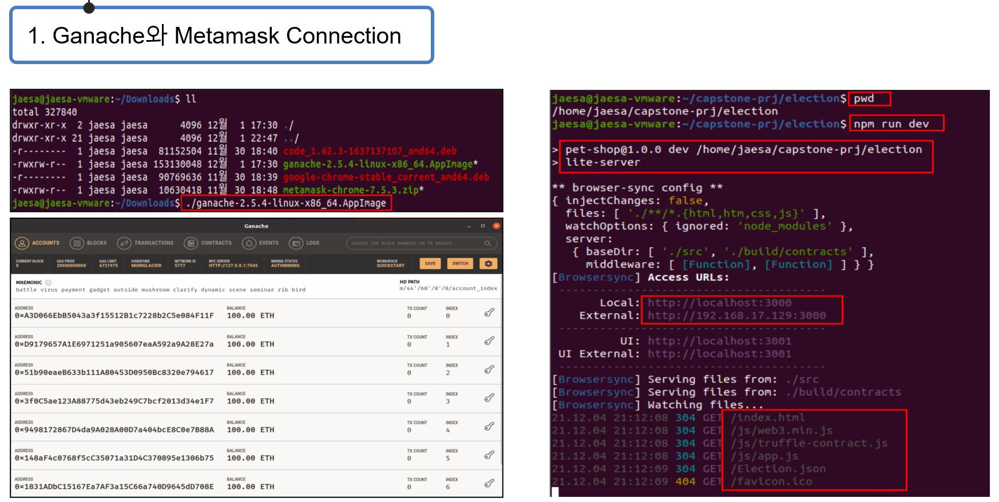

Blockchain-based online voting system


Ganache를 먼저 실행을 시키고, 이미지에서 사용된 명령어처럼 .appImage를 실행시키게 되면 ganache가 정상적으로 실행되는 것을 알 수 있습니다.
Ganache에는 이미지에 보이지 않지만 0번부터 9번까지의 인덱스에 가상 이더리움 계정과 그에 매칭되는 개인키가 저장되어 있습니다.
이제 서버를 실행시키기 위해 하나의 터미널을 새로 실행시키고 프로젝트 상위폴더의 위치에서 `$ npm run dev`명령어를 입력해 서버를 실행합니다.
그러면 저희가 사용하는 서버의 포트번호인 3000번에 정상적으로 접속된 것을 알 수 있고
저희가 앞서 설명드린 Front에 해당하는 기능들이 화면에 출력되는 것을 알 수 있습니다.